← 게임 기획서 원정 병종 등급
일반·혼합팩 기물 104장은 고용 시 병사 2명으로 출발한다. 같은 계열·단계에서도 방어에 특화된 기물은 수비병 2명, 엄호가 필요한 기물은 서로 다른 병종 1명씩을 배치한다. 각 등급 아래에서 기물별 편성을 확인할 수 있다.
등급과 전투 수치 읽기 등급은 병사 한 명의 기본 전투력을 나타낸다. 1→5등급의 기본 체력은 4·7·10·15·24, 기본 공격력은 1·3·5·8·13이다. 돌격병은 공격력에 12.5%, 수비병은 체력에 20%를 더하고 올림한다. 사격병은 거리를 두고 공격한다. 지원병은 행동 차례에 다친 아군 한 명의 체력을 지원력만큼 회복하며, 치료 대상이 없으면 기다린다.
기본 전투력 점수는 공격력(지원병은 지원력)×2 + 체력 + 방어×2이다. 8점 이하가 1등급, 9~16점이 2등급, 17~27점이 3등급, 28~42점이 4등급, 43점 이상이 5등급이다. 적의 권능·분열·사거리와 기물의 증원·강화는 전투 상황에 따라 별도로 작용한다. 수치는 플레이테스트 전 설계값이다.
유닛 이름 아래 기술명을 누르면 발동 조건과 효과를 볼 수 있다. 전투 스킬 판정과 최종전 규칙
강철 군단 황혼 기사단 숲의 수호자 골드웍스 상단 무쇠 망치단 호드 군단 송곳니의 자손들 공허군 최종보스 강철 군단 병영·방벽 수레에서 출고되는 황동 관절의 강철 자동인형. 창과 사출기는 병영, 셔터형 방패는 방벽 설비를 닮았다.
1등급 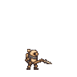
창팔 보행기 돌격 · 공격력 2 · 체력 4
외눈 렌즈와 접이식 창팔을 단 작은 황동 보행기
날밀치기 7초마다 · 정면 1칸 안의 적 최대 2명에게 공격력의 90% 피해를 주고 0.5칸 밀어낸다.
모션과 이펙트 보기 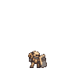
덧판 경비기 수비 · 공격력 1 · 체력 5
각진 철판 방패와 짧은 다리, 한쪽 어깨의 수레 고정쇠
덧판 받침 직접 피해 3회마다 · 자신이 받는 피해를 3초간 25% 줄인다. 지속 중 재발동은 남은 시간만 갱신한다.
모션과 이펙트 보기 기물별 고용 편성 리벳 조립반
코일 경비기
2등급 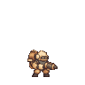
코일 못사수 사격 · 공격력 3 · 체력 7
한 팔이 굵은 리벳 발사기이고 등에 노출된 구리 코일
못 튕기기 기본 사격 3회마다 · 탄환이 원래 목표 주위 2칸의 다른 적 한 명에게 튕겨 공격력의 70% 피해를 준다.
모션과 이펙트 보기 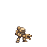
접지 돌격기 돌격 · 공격력 4 · 체력 7
절연 천을 감은 스프링 다리와 갈라진 접지창
접지 도약 기본 공격 3회마다 · 현재 목표에게 공격력의 135%로 찌른다. 시전 뒤 2초간 이동 속도가 20% 오른다.
모션과 이펙트 보기 기물별 고용 편성 나사 선반대
절연 케이블반
스파크 유도기
접지 정비기
예비역 조달관
3등급 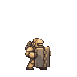
셔터 방벽기 수비 · 공격력 5 · 체력 12
양팔 철판을 맞물려 세우는 장갑 인형, 몸 앞에 선명한 세로 경첩
셔터 내리기 6초마다 · 자기 최대 체력의 18%만큼 자신에게 보호막을 3초간 부여한다.
모션과 이펙트 보기 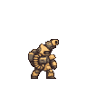
탄띠 장전기 사격 · 공격력 5 · 체력 10
등의 탄띠가 어깨 발사기로 이어지는 세모머리 기계병
탄띠 조준 같은 목표에 기본 사격을 2회 연속 맞히면 · 그 목표에 대한 이후 기본 사격 피해가 20% 증가한다. 목표를 바꾸면 누적과 보너스가 사라진다.
모션과 이펙트 보기 기물별 고용 편성 부품 배분기
정비 레일대
전하 중계기
예열 증폭기
파견 공병
4등급 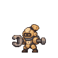
교정 압착기 돌격 · 공격력 9 · 체력 15
한쪽 팔의 네모난 압착기와 반대쪽의 굵은 조정 나사
압착 고정 6초마다 · 현재 목표에게 공격력의 85% 피해를 주고 2초간 이동 속도를 25% 낮춘다.
모션과 이펙트 보기 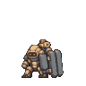
이동 차폐기 수비 · 공격력 8 · 체력 18
회청색 접이식 방벽을 한 팔에 고정한 묵직한 보행기
슬라이드 차폐 직접 피해 3회마다 · 자신이 받는 피해를 3초간 25% 줄인다. 지속 중 재발동은 남은 시간만 갱신한다.
모션과 이펙트 보기 기물별 고용 편성 교정기
조립기
5등급 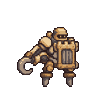
성문 견인기 수비 · 공격력 13 · 체력 29
수레 견인고리와 성문형 흉갑, 말뚝 같은 두 발을 갖춘 공성 자동인형
견인기 비상판 체력이 50% 아래로 내려갈 때, 재사용 10초 · 자신에게 최대 체력의 15%만큼 보호막을 4초간 부여하고 같은 시간 밀려나는 거리를 50% 줄인다.
모션과 이펙트 보기 성문 걸쇠 6초마다 · 2칸 안에서 후열 아군을 노리는 적 최대 2명을 2초간 도발한다. 자기 보호막이 남아 있으면 자신이 받는 피해도 2초간 20% 줄인다.
모션과 이펙트 보기 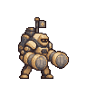
공성 압연기 돌격 · 공격력 15 · 체력 24
등에 병영 신호기를 달고 양 전완 롤러를 앞으로 내민 무거운 돌격기
압연 밀어내기 7초마다 · 정면 1칸 안의 적 최대 2명에게 공격력의 90% 피해를 주고 0.5칸 밀어낸다.
모션과 이펙트 보기 가속 피스톤 적을 밀어낸 뒤, 재사용 6초 · 밀려난 적 쪽으로 빈자리까지 최대 1칸 전진한다. 재접촉하면 공격력의 115%로 내려친다.
모션과 이펙트 보기 기물별 고용 편성 공성 지휘기
분대 통제기
황혼 기사단 남보라 망토를 두른 인간 기사단. 봉화 주인과 이웃을 등잔·화로·횃불 무기로 구분한다.
1등급 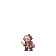
불씨 종자 돌격 · 공격력 2 · 체력 4
단검을 든 어린 기사와 허리의 작은 심지통
불씨 가르기 6초마다 · 현재 목표와 그 주위 반경 1칸의 적 최대 2명에게 각각 공격력의 85% 피해를 준다.
모션과 이펙트 보기 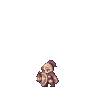
등불 방패수 수비 · 공격력 1 · 체력 5
원방패 위에 호박색 등불을 매단 투구 차림 보초
등불 가림 직접 피해 3회마다 · 자신이 받는 피해를 3초간 25% 줄인다. 지속 중 재발동은 남은 시간만 갱신한다.
모션과 이펙트 보기 기물별 고용 편성 황혼 방패병
맹약의 검사
2등급 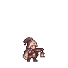
등화 쇠뇌수 사격 · 공격력 3 · 체력 7
쇠뇌 몸통에 짧은 등잔을 건 망루 사수
등화 관통 기본 사격 3회마다 · 목표에게 공격력의 100%, 같은 직선상 뒤쪽에서 가장 가까운 적 1명에게 공격력의 65% 피해를 준다.
모션과 이펙트 보기 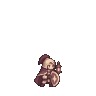
등잔 호위기사 수비 · 공격력 3 · 체력 9
철등불을 보호하는 초승 방패와 도톰한 자주색 천
호위 등받이 3초마다 · 직전 2초간 이동하지 않았으면 자기 최대 체력의 8%를 회복한다.
모션과 이펙트 보기 기물별 고용 편성 철등불 호위대
저녁 망토병
상복 창병대
맹세의 선발대
연락 기수
3등급 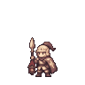
화로 창기사 돌격 · 공격력 6 · 체력 10
창날 밑에 붉은 천과 작은 봉화 화로를 단 기사
화로 찌르기 기본 공격 3회마다 · 현재 목표에게 공격력의 135%로 찌른다. 시전 뒤 2초간 이동 속도가 20% 오른다.
모션과 이펙트 보기 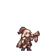
점화 나팔수 지원 · 지원력 5 · 체력 10
금빛 나팔을 들고 가슴에 교대용 불씨갑을 맨 전령
점화 나팔 7초마다 · 반경 2칸의 부상 아군 중 체력 비율이 낮은 순서로 최대 3명을 각각 지원력의 55%만큼 치료한다.
모션과 이펙트 보기 기물별 고용 편성 저녁 순찰대
황혼 잔류대
검은기 수습대
뿌리 등지기
4등급 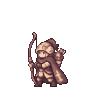
성루 불시위꾼 사격 · 공격력 8 · 체력 15
어깨의 불씨통과 긴 장궁을 든 성문 기수단의 사수
성루 일제사격 6초마다 · 사거리 안에서 서로 다른 적 최대 3명에게 화살이나 탄환을 하나씩 발사해 각각 공격력의 65% 피해를 준다.
모션과 이펙트 보기 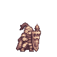
횃불 망루병 수비 · 공격력 8 · 체력 18
망루 모양 넓은 방패의 윗부분에 작은 불빛을 켠 중장 기사
횃불 버팀 직접 피해 3회마다 · 자신이 받는 피해를 3초간 25% 줄인다. 지속 중 재발동은 남은 시간만 갱신한다.
모션과 이펙트 보기 기물별 고용 편성 성문 기수장
횃불 교대대
종자 인솔관
5등급 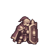
끝불 성문기사 수비 · 공격력 13 · 체력 29
보랏빛 긴 망토, 봉화창이 뚫린 거대한 문짝 방패를 든 수비대
끝불 방진 직접 피해 3회마다 · 자신이 받는 피해를 3초간 25% 줄인다. 지속 중 재발동은 남은 시간만 갱신한다.
모션과 이펙트 보기 끝불 엄호 자신의 피해 감소가 발동할 때, 재사용 6초 · 2칸 안에서 체력 비율이 가장 낮은 다른 아군 한 명에게 대상 최대 체력의 18% 보호막을 4초간 준다.
모션과 이펙트 보기 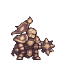
황혼 집결기사 돌격 · 공격력 15 · 체력 24
횃불깃을 단 넓은 견갑과 별머리 양손 철퇴를 쥔 돌격 기사
집결 돌진 기본 공격 3회마다 · 현재 목표에게 공격력의 135%로 찌른다. 시전 뒤 2초간 이동 속도가 20% 오른다.
모션과 이펙트 보기 황혼 횡베기 기본 공격 4회마다 · 앞쪽 1칸의 적 최대 3명에게 공격력의 85% 피해를 준다. 이동 속도 증가 상태에서는 범위가 2칸이다.
모션과 이펙트 보기 기물별 고용 편성 마지막 성문장
황혼의 대원수
숲의 수호자 올리브색 잎과 황금빛 수액을 공유하는 엘프·드루이드. 성장할수록 씨앗에서 가지와 수관으로 변한다.
1등급 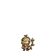
새눈 활잡이 사격 · 공격력 1 · 체력 4
뾰족한 귀의 어린 엘프, 새눈이 돋은 가지활과 작은 정기씨 주머니
겹잎 관통 기본 사격 3회마다 · 목표에게 공격력의 100%, 같은 직선상 뒤쪽에서 가장 가까운 적 1명에게 공격력의 65% 피해를 준다.
모션과 이펙트 보기 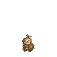
묘목 방패지기 수비 · 공격력 1 · 체력 5
묘목 드루이드가 어린 뿌리로 엮은 작은 방패를 든 모습
뿌리 버팀 직접 피해 3회마다 · 자신이 받는 피해를 3초간 25% 줄인다. 지속 중 재발동은 남은 시간만 갱신한다.
모션과 이펙트 보기 기물별 고용 편성 묘목 돌봄이
달숲 순찰대
2등급 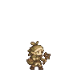
씨앗 물매꾼 사격 · 공격력 3 · 체력 7
도토리 정기씨를 담은 잎주머니와 굵은 물매를 든 엘프
튀는 도토리 기본 사격 3회마다 · 탄환이 원래 목표 주위 2칸의 다른 적 한 명에게 튕겨 공격력의 70% 피해를 준다.
모션과 이펙트 보기 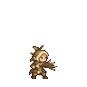
접가지 찌름병 돌격 · 공격력 4 · 체력 7
팔의 수피 장갑에 곧은 가시가 접붙은 숲 전사
가시 휘감기 6초마다 · 현재 목표와 그 주위 반경 1칸의 적 최대 2명에게 각각 공격력의 85% 피해를 준다.
모션과 이펙트 보기 기물별 고용 편성 가지 접목반
이슬막 약초반
솔방울 변신단
달빛 피리꾼
그늘 묘목지기
3등급 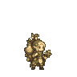
이슬 수액지기 지원 · 지원력 5 · 체력 10
황금 수액병을 잎 등짐틀에 넣어 메고 약초를 쥔 치유사
이슬 퍼뜨리기 7초마다 · 반경 2칸의 부상 아군 중 체력 비율이 낮은 순서로 최대 3명을 각각 지원력의 55%만큼 치료한다.
모션과 이펙트 보기 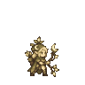
달숲 활지기 사격 · 공격력 5 · 체력 10
활 손잡이에서 두 가지가 갈라지고 달빛 잎이 자란 엘프 사수
달빛 막깨기 5초마다 · 현재 목표의 보호막에 공격력의 160%만큼 피해를 준다. 보호막이 없는 목표에는 공격력의 85% 피해를 준다. 초과 보호막 피해는 체력으로 넘기지 않는다.
모션과 이펙트 보기 기물별 고용 편성 숲의 인도자
뿌리 연락조
길잡이 드루이드
발자국 수호대
4등급 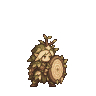
나이테 방패지기 수비 · 공격력 8 · 체력 18
큰 줄기 단면을 방패로 세운 수피 드루이드, 노출된 나이테
나이테 버팀 직접 피해 3회마다 · 자신이 받는 피해를 3초간 25% 줄인다. 지속 중 재발동은 남은 시간만 갱신한다.
모션과 이펙트 보기 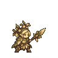
수관 가시창병 돌격 · 공격력 9 · 체력 15
정기씨가 열린 가지 어깨와 잎날 창으로 선두를 맡는 엘프
수관 휩쓸기 6초마다 · 현재 목표와 그 주위 반경 1칸의 적 최대 2명에게 각각 공격력의 85% 피해를 준다.
모션과 이펙트 보기 기물별 고용 편성 과수원지기
숲길지기
5등급 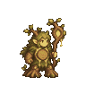
들숲 뿌리수호자 수비 · 공격력 13 · 체력 29
뿌리발과 둥근 나이테 가슴, 숲빛 수액이 흐르는 거목 형상의 드루이드
참뿌리 버팀 직접 피해 3회마다 · 자신이 받는 피해를 3초간 25% 줄인다. 지속 중 재발동은 남은 시간만 갱신한다.
모션과 이펙트 보기 참뿌리 나무진 6초마다 · 자기 반경 2칸의 부상 아군 최대 3명에게 자기 최대 체력의 4%만큼 각각 회복시킨다. 자신이 피해 감소 중이면 6%씩 회복한다.
모션과 이펙트 보기 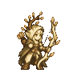
황금눈 대궁수 사격 · 공격력 13 · 체력 24
흰 가지의 대궁 위에 황금색 겨울눈이 맺힌 장신의 수관 사수
겨울눈 추격 기본 공격 적중 시 · 대상의 남은 체력이 40% 이하이면 그 기본 공격 피해가 20% 증가한다.
모션과 이펙트 보기 금빛 틈새 6초마다 · 사거리 안에서 체력 비율이 가장 낮은 적을 공격력의 115%로 맞힌다. 대상 체력이 40% 이하이면 뒤쪽 1칸의 적 한 명도 공격력의 65% 피해를 받는다.
모션과 이펙트 보기 기물별 고용 편성 들숲의 어미
수확왕
골드웍스 상단 길고 뾰족한 귀와 연녹색 피부의 고블린 상단. 거래 영수증·금고·황동 저울을 병장구에 단다.
1등급 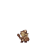
영수증 심부름꾼 돌격 · 공격력 2 · 체력 4
곤봉과 동전표 가방을 든 작은 연녹색 고블린
급송 돌파 기본 공격 3회마다 · 현재 목표에게 공격력의 135%로 찌른다. 시전 뒤 2초간 이동 속도가 20% 오른다.
모션과 이펙트 보기 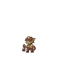
잔돈 물매꾼 사격 · 공격력 1 · 체력 4
가죽 물매와 구리 잔돈통을 맨 큰 귀 고블린
튕기는 잔돈 기본 사격 3회마다 · 탄환이 원래 목표 주위 2칸의 다른 적 한 명에게 튕겨 공격력의 70% 피해를 준다.
모션과 이펙트 보기 기물별 고용 편성 장부 견습
저장고 견습
2등급 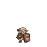
계약패 호위꾼 수비 · 공격력 3 · 체력 9
눌러 찍은 계약 인장이 붙은 나무상자 방패를 든 고블린
계약 방패벽 직접 피해 3회마다 · 자신이 받는 피해를 3초간 25% 줄인다. 지속 중 재발동은 남은 시간만 갱신한다.
모션과 이펙트 보기 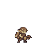
황동전 쇠뇌꾼 사격 · 공격력 3 · 체력 7
동전 모양 탄창이 달린 쇠뇌와 짐표 조끼의 고블린
동전 일제사격 6초마다 · 사거리 안에서 서로 다른 적 최대 3명에게 화살이나 탄환을 하나씩 발사해 각각 공격력의 65% 피해를 준다.
모션과 이펙트 보기 기물별 고용 편성 짐표 배달원
장터 안내조
길목 짐수레
황동 호각수
3등급 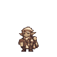
외상 약제사 지원 · 지원력 5 · 체력 10
약병을 매단 거래 장부와 붕대, 뾰족한 귀의 고블린 의원
외상 처방 유효 기본 치유 3회마다 · 방금 치료한 대상 주위 2칸에서 체력 비율이 가장 낮은 다른 아군 1명을 지원력의 80%만큼 회복한다.
모션과 이펙트 보기 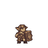
금고 호송꾼 수비 · 공격력 5 · 체력 12
잠금쇠 달린 궤짝 방패와 금고 열쇠를 허리에 찬 고블린
금고 두드리기 7초마다 · 반경 2칸에서 가장 가까운 적 최대 2명을 2초간 도발하고 그동안 자신이 받는 피해가 15% 감소한다.
모션과 이펙트 보기 기물별 고용 편성 수레 중개인
야전 약상인
환전 금고지기
군마 감정사
4등급 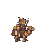
교역 짐기수 돌격 · 공격력 9 · 체력 15
짧은 창을 들고 황색 짐보를 실은 낙타에 탄 고블린
짐창 돌진 기본 공격 3회마다 · 현재 목표에게 공격력의 135%로 찌른다. 시전 뒤 2초간 이동 속도가 20% 오른다.
모션과 이펙트 보기 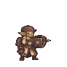
금고 감정사수 사격 · 공격력 8 · 체력 15
단안경 고블린이 금고형 탄창의 육중한 쇠뇌를 받친 모습
금고 관통탄 기본 사격 3회마다 · 목표에게 공격력의 100%, 같은 직선상 뒤쪽에서 가장 가까운 적 1명에게 공격력의 65% 피해를 준다.
모션과 이펙트 보기 기물별 고용 편성 중개인
교역상
창고 감정사
5등급 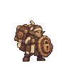
상회 금고수호자 수비 · 공격력 13 · 체력 29
등의 튼튼한 전속상회 금고와 커다란 황동 자물쇠 방패, 녹색 얼굴
금고 걸쇠 7초마다 · 반경 2칸에서 가장 가까운 적 2명을 2초간 도발한다. 도발 중 직접 피격될 때마다 자기 최대 체력의 5% 보호막을 얻는다(시전당 2번, 지속 3초).
모션과 이펙트 보기 철문 버팀 직접 피해 3회마다 · 자신이 받는 피해를 3초간 25% 줄인다. 지속 중 재발동은 남은 시간만 갱신한다.
모션과 이펙트 보기 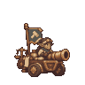
경매 호위포차 사격 · 공격력 13 · 체력 24
낮고 넓은 황동 화포 수레 위에 경매 깃발과 한 명의 고블린 포수
낙찰 추격포 기본 공격 적중 시 · 대상의 남은 체력이 40% 이하이면 그 기본 공격 피해가 20% 증가한다.
모션과 이펙트 보기 봉인 파쇄탄 6초마다 · 사거리 안에서 보호막이 가장 큰 적의 보호막에 공격력의 180% 피해를 준다. 보호막을 깨면 그 대상에게 공격력의 65% 추가 피해. 보호막을 가진 적이 없으면 현재 목표에 공격력의 95% 피해를 준다.
모션과 이펙트 보기 기물별 고용 편성 전속상회 대표
만국시장 경매사
무쇠 망치단 검댕 묻은 수염의 드워프 주조반. 넓은 장비에 하나씩 늘어나는 단조 보강판과 망치 자국이 등급을 드러낸다.
4등급 금형 방벽장이 전열을 맡는다. 결투 절단장은 넓은 날로 근접 공격하고, 병기창 쇠뇌장은 후열에서 지원 사격한다.
1등급 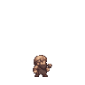
첫불 망치꾼 돌격 · 공격력 2 · 체력 4
작은 사각 손망치와 검댕 묻은 짧은 앞치마의 견습 드워프
화덕 휘두르기 6초마다 · 현재 목표와 그 주위 반경 1칸의 적 최대 2명에게 각각 공격력의 85% 피해를 준다.
모션과 이펙트 보기 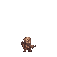
쇳못 사수 사격 · 공격력 1 · 체력 4
쇳못이 꽂힌 작은 탄통과 짧은 주철 쇠뇌를 든 드워프
뒷걸음 사격 근접 적이 1칸 안에 들어오면, 재사용 6초 · 안전하게 이동할 수 있으면 한 칸 후퇴하고 추격자에게 공격력의 65% 피해를 준다. 퇴로가 막혀도 사격한다.
모션과 이펙트 보기 기물별 고용 편성 고철 대장장이
무쇠 견습공
2등급 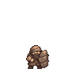
철편 방패수 수비 · 공격력 3 · 체력 9
회수 철편을 세 겹 겹쳐 리벳으로 묶은 방패를 든 수비 드워프
철편 맞대기 직접 피해 3회마다 · 자신이 받는 피해를 3초간 25% 줄인다. 지속 중 재발동은 남은 시간만 갱신한다.
모션과 이펙트 보기 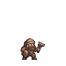
숫돌 쐐기꾼 사격 · 공격력 3 · 체력 7
허리에 숫돌, 손에는 넓은 투척용 무쇠 쐐기를 든 드워프
쐐기 고정 5초마다 · 목표에게 공격력의 90% 피해를 주고 3초간 이동 속도를 25% 낮춘다.
모션과 이펙트 보기 기물별 고용 편성 폐철 수거반
화덕 앞치마단
숫돌 수리공
혁대 정비반
3등급 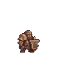
모루받이 파수병 수비 · 공격력 5 · 체력 12
모루 밑받침을 닮은 각진 방패와 내열 어깨덮개
모루 맞받기 직접 피해를 받은 뒤, 재사용 5초 · 가해자가 기본 사거리 안에 있으면 공격력의 80%로 반격한다. 사거리 밖이면 2초 동안 자신이 받는 피해가 15% 감소한다.
모션과 이펙트 보기 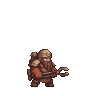
잉걸 집게병 돌격 · 공격력 6 · 체력 10
양손 단조 집게와 붉은 잉걸색 장갑을 낀 땅딸막한 드워프
잉걸 찌르기 기본 공격 3회마다 · 현재 목표에게 공격력의 135%로 찌른다. 시전 뒤 2초간 이동 속도가 20% 오른다.
모션과 이펙트 보기 기물별 고용 편성 철편 조립소
잉걸 엄호대
모루 기술자
4등급 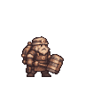
강철 큰메잡이 돌격 · 공격력 9 · 체력 15
두꺼운 보강띠가 감긴 큰 사각 단조메와 짧은 은빛 수염
큰메 내려치기 기본 공격 3회마다 · 현재 목표에게 공격력의 135%로 찌른다. 시전 뒤 2초간 이동 속도가 20% 오른다.
모션과 이펙트 보기 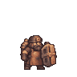
금형 방벽장 수비 · 공격력 8 · 체력 18
두 금형판을 맞물린 대형 방패와 그을린 구리 앞치마
노벽 받침 직접 피해 3회마다 · 자신이 받는 피해를 3초간 25% 줄인다. 지속 중 재발동은 남은 시간만 갱신한다.
모션과 이펙트 보기 기물별 고용 편성 명장
양산공
금형 보관인
5등급 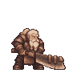
결투 절단장 돌격 · 공격력 15 · 체력 24
양손 강괴 절단날을 낮게 받친 백발 드워프, 날등의 세 단조띠
결투 횡절 6초마다 · 현재 목표와 그 주위 반경 1칸의 적 최대 2명에게 각각 공격력의 85% 피해를 준다.
모션과 이펙트 보기 절단장의 함성 결투 횡절 적중 시, 재사용 6초 · 두 명 이상에게 적중하면 자기 팀의 공격·치유가 3초간 12% 오른다. 한 명에게 적중하면 자신에게 최대 체력의 10% 보호막을 3초간 준다.
모션과 이펙트 보기 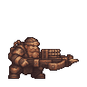
병기창 쇠뇌장 사격 · 공격력 13 · 체력 24
주형 탄창이 달린 수평 대형 쇠뇌 뒤에 몸을 낮춘 구리수염 드워프
쇠뇌 산개사격 6초마다 · 사거리 안에서 서로 다른 적 최대 3명에게 화살이나 탄환을 하나씩 발사해 각각 공격력의 65% 피해를 준다.
모션과 이펙트 보기 집중 노궁 6초마다 · 현재 목표와 같은 적을 조준한 아군이 있으면 공격력의 150%로 한 발 쏜다. 단독 조준이면 현재 목표와 1칸 이내의 다른 적 한 명에게 각각 80% 피해를 준다.
모션과 이펙트 보기 기물별 고용 편성 모루의 결투장인
병기창 총감
호드 군단 붉은모래의 오크 전사들. 녹빛 피부와 아래턱 송곳니가 공통 표식이다. 붉은 매듭은 신병의 창자루에서 고참의 망토와 대형 무기로 이어진다.
1등급
돌갑 신병 수비 · 공격력 1 · 체력 5
돌 어깨갑과 조그만 앞방패를 든 올리브 피부 오크
돌갑 버팀 직접 피해 3회마다 · 자신이 받는 피해를 3초간 25% 줄인다. 지속 중 재발동은 남은 시간만 갱신한다.
모션과 이펙트 보기
북채 돌투수 사격 · 공격력 1 · 체력 4
북끈을 손목에 감고 조약돌을 겨누는 작은 오크 투수
튕기는 북채돌 기본 사격 3회마다 · 탄환이 원래 목표 주위 2칸의 다른 적 한 명에게 튕겨 공격력의 70% 피해를 준다.
모션과 이펙트 보기 기물별 고용 편성 돌어깨 전사
전투 북잡이
2등급
붉은끈 도끼병 돌격 · 공격력 4 · 체력 7
붉은 승급 매듭 하나와 한날 돌도끼를 든 오크
붉은끈 가르기 6초마다 · 현재 목표와 그 주위 반경 1칸의 적 최대 2명에게 각각 공격력의 85% 피해를 준다.
모션과 이펙트 보기
붉은매듭 창병 돌격 · 공격력 4 · 체력 7
붉은 가죽끈을 감은 두손창을 든 젊은 오크
매듭창 찌르기 기본 공격 3회마다 · 현재 목표에게 공격력의 135%로 찌른다. 시전 뒤 2초간 이동 속도가 20% 오른다.
모션과 이펙트 보기 기물별 고용 편성 깨진뿔 전열대
전열 붕대꾼
전열 나팔수
진형 선도병
3등급
집결 큰북수 지원 · 지원력 5 · 체력 10
허리 큰북과 붉은 매듭 북채 두 개를 든 오크
집결 북소리 7초마다 · 반경 2칸의 가장 가까운 다른 아군 최대 3명의 공격·치유를 3초간 12% 올린다.
모션과 이펙트 보기
돌문 방패병 수비 · 공격력 5 · 체력 12
돌문처럼 넓은 판석 방패 뒤에서 송곳니를 드러낸 오크
돌문 닫기 6초마다 · 자기 최대 체력의 18%만큼 자신에게 보호막을 3초간 부여한다.
모션과 이펙트 보기 기물별 고용 편성 붉은갈기 북지기
붉은뿔 징수대
바위 북대
메아리 파수꾼
4등급
시련 투창수 사격 · 공격력 8 · 체력 15
등에 예비 투창을 메고 한 손에 짧은 투창을 겨눈 오크
시련의 추격창 기본 공격 적중 시 · 대상의 남은 체력이 40% 이하이면 그 기본 공격 피해가 20% 증가한다.
모션과 이펙트 보기
붉은모래 결투사 돌격 · 공격력 9 · 체력 15
붉은 허리띠를 두르고 넓은 돌칼을 앞으로 세운 오크
모래 원무 6초마다 · 현재 목표와 그 주위 반경 1칸의 적 최대 2명에게 각각 공격력의 85% 피해를 준다.
모션과 이펙트 보기 기물별 고용 편성 도전자 모집꾼
상처 교관
5등급
맹세비 방패장 수비 · 공격력 13 · 체력 29
붉은 망토와 매듭 지은 비석 방패를 갖춘 고참 오크
맹세비 피갑 체력이 50% 아래로 내려갈 때, 재사용 10초 · 자신에게 최대 체력의 15%만큼 보호막을 4초간 부여하고 같은 시간 밀려나는 거리를 50% 줄인다.
모션과 이펙트 보기 석벽 버팀 직접 피격 시, 재사용 5초 · 보호막이 있으면 공격자를 2초간 도발한다. 보호막이 없으면 자기 최대 체력의 12%만큼 보호막을 3초간 얻는다.
모션과 이펙트 보기
핏매듭 도끼장 돌격 · 공격력 15 · 체력 24
승급 매듭을 두른 큰도끼를 양손에 쥔 오크 전쟁대장
핏매듭 횡베기 6초마다 · 현재 목표와 그 주위 반경 1칸의 적 최대 2명에게 각각 공격력의 85% 피해를 준다.
모션과 이펙트 보기 도끼 추격 직접 처치하거나 목표가 쓰러질 때, 재사용 4초 · 가장 가까운 다음 적에게 최대 1칸 접근한다. 접근 뒤 기본 사거리 안이면 공격력의 90% 피해를 준다.
모션과 이펙트 보기 기물별 고용 편성 붉은모래 챔피언
뿔고리 대사범
송곳니의 자손들 짐승 얼굴의 수인 사냥대. 자기 사냥에서 모은 정수는 허리의 작은 호박색 주머니와 늘어나는 짐승이빨로 표현한다.
고갯길 뿔투척수는 거리를 벌리고, 흰갈기 몰이창수는 접근해 공격한다. 같은 적 처치에 기여하면 각각 자기 기물에 사냥 정수가 쌓인다.
1등급
여울 자국꾼 돌격 · 공격력 2 · 체력 4
발자국을 더듬는 여우 수인, 짧은 돌칼과 빈 정수 주머니
여울 밀치기 7초마다 · 정면 1칸 안의 적 최대 2명에게 공격력의 90% 피해를 주고 0.5칸 밀어낸다.
모션과 이펙트 보기
물길 투창수 사격 · 공격력 1 · 체력 4
수달 수인이 물고기뼈 투창을 들고 호박색 정수알을 찬 모습
물길 꿰기 기본 사격 3회마다 · 목표에게 공격력의 100%, 같은 직선상 뒤쪽에서 가장 가까운 적 1명에게 공격력의 65% 피해를 준다.
모션과 이펙트 보기 기물별 고용 편성 개울 정찰대
돌담 달리미
2등급
갈대 가죽지기 수비 · 공격력 3 · 체력 9
멧돼지 수인이 갈대로 엮은 가죽 방패를 몸에 붙인 모습
갈대 엮기 직접 피해 3회마다 · 자신이 받는 피해를 3초간 25% 줄인다. 지속 중 재발동은 남은 시간만 갱신한다.
모션과 이펙트 보기
덫발톱 습격꾼 돌격 · 공격력 4 · 체력 7
늑대 수인, 덫줄을 감은 팔과 갈고리 뼈발톱
덫발톱 뛰기 기본 공격 3회마다 · 현재 목표에게 공격력의 135%로 찌른다. 시전 뒤 2초간 이동 속도가 20% 오른다.
모션과 이펙트 보기 기물별 고용 편성 갈대 매복조
덫줄 정찰조
자갈길 척후대
핏자국 관측병
3등급
고갯길 가시궁수 사격 · 공격력 5 · 체력 10
호저 수인의 방사형 등가시와 작은 사냥 정수병, 뼈활
가시 부채살 6초마다 · 사거리 안에서 서로 다른 적 최대 3명에게 화살이나 탄환을 하나씩 발사해 각각 공격력의 65% 피해를 준다.
모션과 이펙트 보기
핏자국 약손 지원 · 지원력 5 · 체력 10
오소리 수인 의원이 이빨 부적과 약초 꾸러미를 들고 웅크린 모습
약손 이어주기 유효 기본 치유 3회마다 · 방금 치료한 대상 주위 2칸에서 체력 비율이 가장 낮은 다른 아군 1명을 지원력의 80%만큼 회복한다.
모션과 이펙트 보기 기물별 고용 편성 고갯길 사냥조
뼈장식 신호수
비탈길 덮치기대
갈고리 길잡이
4등급
여울 큰뿔지기 수비 · 공격력 8 · 체력 18
넓은 뿔과 젖은 가죽 어깨덮개의 들소 수인, 큼직한 억새 방패
큰뿔 가리기 6초마다 · 자기 최대 체력의 18%만큼 자신에게 보호막을 3초간 부여한다.
모션과 이펙트 보기
무리 추격발톱 돌격 · 공격력 9 · 체력 15
짧은 귀 스라소니 수인, 정수 매듭과 굽은 갈퀴 완갑 두 개
무리발톱 휘두르기 6초마다 · 현재 목표와 그 주위 반경 1칸의 적 최대 2명에게 각각 공격력의 85% 피해를 준다.
모션과 이펙트 보기 기물별 고용 편성 여울 선봉대
무리어미
5등급
고갯길 뿔투척수 사격 · 공격력 13 · 체력 24
커다란 멧돼지 수인이 초승달 모양 투척뿔을 세우고 앞손으로 목표를 가리킨다
갈라지는 뿔창 기본 사격 3회마다 · 목표에게 공격력의 100%, 같은 직선상 뒤쪽에서 가장 가까운 적 1명에게 공격력의 65% 피해를 준다.
모션과 이펙트 보기 튕기는 창날 관통 사격으로 두 번째 적을 맞히면 · 창날이 두 번째 적의 반경 2칸에서 아직 맞지 않은 가장 가까운 적 한 명에게 튕겨 공격력의 75% 피해를 준다.
모션과 이펙트 보기
흰갈기 몰이창수 돌격 · 공격력 15 · 체력 24
흰갈기 사자 수인이 사냥 이빨 묶음을 찬 채 넓은 뼈창을 들고 선다
흰갈기 돌진 기본 공격 3회마다 · 현재 목표에게 공격력의 135%로 찌른다. 시전 뒤 2초간 이동 속도가 20% 오른다.
모션과 이펙트 보기 몰이창 균열 6초마다 · 다른 아군이 공격 중인 적을 사거리 안에서 우선 찔러 공격력의 105% 피해를 주고 3초간 받는 기본 공격 피해를 10% 늘린다. 공동 목표가 없으면 현재 목표를 찌른다.
모션과 이펙트 보기 기물별 고용 편성 고개돌이 대장
갈기 무리왕
공허군 32종 기존 능력치에서 기본 위협도를 계산했다. 삼키는 자의 두 페이즈는 5등급 한 종이며, 격파 후 나타나는 분열체는 별도의 4등급이다.
1등급 · 8종
균열 진드기 공격 1 · 체력 2 · 방어 0
틈 물기 기본 공격 3회마다 · 현재 목표에게 공격력의 120% 피해를 주고 자신은 다음 2초간 이동 속도 +20%.
모션과 이펙트 보기
미광 포자 공격 1 · 체력 2 · 방어 0
번지는 포자 6초마다 · 현재 목표에 포자를 붙인다. 3초 동안 매초 공격력의 30% 피해를 준다.
모션과 이펙트 보기
갈고리 새끼 공격 2 · 체력 1 · 방어 0
꼬리 닻 5초마다 · 같은 쪽에서 가장 가까운 적 방향으로 빈자리까지 최대 1칸 접근한다. 이어 기본 사거리 안이면 공격력의 70% 피해를 준다.
모션과 이펙트 보기
실금 알껍질 공격 1 · 체력 3 · 방어 0
금 간 껍질 직접 피해를 받을 때, 재사용 4초 · 껍질을 닫아 해당 피해를 25% 줄인다.
모션과 이펙트 보기
속빈 미아 공격 1 · 체력 3 · 방어 0
텅 빈 숨 5초마다 · 현재 목표에게 공격력의 70% 피해를 주고 2초간 이동 속도를 20% 줄인다.
모션과 이펙트 보기
틈새 추적자 공격 2 · 체력 2 · 방어 0
틈새 추격 4초마다 · 현재 목표가 사거리 밖이면 최대 1칸 접근하고 2초간 이동 속도가 25% 오른다. 사거리 안이면 공격력의 70% 피해를 준다.
모션과 이펙트 보기
폐허 등껍질 공격 2 · 체력 4 · 방어 0
등판 세우기 6초마다 · 반경 1칸에서 가장 가까운 적 1명을 2초간 도발한다. 그동안 자신이 받는 피해가 20% 감소한다.
모션과 이펙트 보기
유리 촉수 공격 3 · 체력 2 · 방어 0
유리 가시 기본 사격 3회마다 · 현재 목표에 공격력의 110% 피해를 주고 뒤쪽 1칸의 다른 상대 한 명을 공격력의 50%로 관통한다.
모션과 이펙트 보기 2등급 · 6종
조개 등짐꾼 공격 2 · 체력 5 · 방어 0
빈 조개 덮개 6초마다 · 반경 2칸의 다른 공허 유닛 중 체력 비율이 가장 낮은 한 기에 대상 최대 체력의 15%만큼 보호막을 4초간 준다.
모션과 이펙트 보기
모래 잠복자 공격 3 · 체력 4 · 방어 0
모래 등지느러미 6초마다 · 가장 가까운 상대 후열의 발밑에 모래 자국을 1초 예고하고 비어 있는 인접 칸까지 최대 2칸 접근한다. 반경 1칸의 상대 최대 2명에게 공격력의 70% 피해를 준다.
모션과 이펙트 보기
불완전한 혼종 공격 3 · 체력 5 · 방어 0
엇물린 집게 5초마다 · 현재 목표를 두 집게로 잡아 공격력의 65% 피해를 두 번 준다. 두 타격은 같은 대상에게만 적용한다.
모션과 이펙트 보기
장막 유령 공격 3 · 체력 5 · 방어 0
장막 재봉 전투당 한 번, 자신이 쓰러질 때 · 쓰러진 순간부터 1초간 공격하거나 피격되지 않는다. 쓰러진 칸이 비어 있으면 그곳에서, 점유됐으면 가장 가까운 빈칸에서 최대 체력의 25%로 부활한다.
모션과 이펙트 보기
공허 송곳니 공격 5 · 체력 3 · 방어 0
낫턱 절단 기본 공격 시 · 현재 목표의 체력이 40% 이하이면 그 기본 공격 피해가 25% 증가한다.
모션과 이펙트 보기
메아리 갯지렁이 공격 5 · 체력 5 · 방어 0
되받는 진동 기본 공격 3회마다 · 목표 주위 1칸에 울림을 남긴다. 0.5초 뒤 그 안에서 가까운 상대 최대 2명에게 공격력의 65% 피해를 준다.
모션과 이펙트 보기 3등급 · 7종 빈껍질 집전관 공격 6 · 체력 8 · 방어 0
껍질 속 전류 5초마다 · 반경 3칸 안에서 체력 비율이 가장 낮은 다른 부상 공허 유닛 한 기를 자기 공격력의 90%만큼 회복한다.
모션과 이펙트 보기
깨진 왕관 공격 7 · 체력 8 · 방어 0
왕관 포위 7초마다 · 반경 2칸에서 가까운 적 최대 3명을 2초간 도발한다. 도발한 적 하나당 자기 최대 체력 5%의 보호막을 3초간 얻는다.
모션과 이펙트 보기
뒤틀린 창 공격 8 · 체력 6 · 방어 0
자라는 창마디 기본 공격 2회 적중마다 · 이번 전투 동안 자신의 공격력이 8%씩 증가한다. 최대 3중첩이다.
모션과 이펙트 보기
거울 감시자 공격 8 · 체력 9 · 방어 0
흐린 반사상 6초마다 · 사거리 안에서 공격력이 가장 높은 상대 1명에게 거울빛을 비춰 3초간 그 대상의 공격·치유를 15% 줄인다.
모션과 이펙트 보기
먹빛 장막 공격 6 · 체력 7 · 방어 3
먹빛 겹막 6초마다 · 자기 최대 체력의 20%만큼 보호막을 4초간 얻는다.
모션과 이펙트 보기
심연 합창단 공격 8 · 체력 10 · 방어 0
끝나지 않은 화음 전투당 한 번, 자신이 쓰러질 때 · 2초 뒤 최대 체력 25%로 부활한다. 부활 위치 반경 1칸의 상대 최대 3명에게 공격력의 45% 피해를 준다.
모션과 이펙트 보기
먹구름 순례자 공격 7 · 체력 12 · 방어 0
순례자의 비구름 7초마다 · 반경 2칸에서 가장 가까운 다른 공허 유닛 최대 3기가 3초간 받는 원거리 피해를 20% 줄인다.
모션과 이펙트 보기 4등급 · 7종
분열체 공격 9 · 체력 10 · 방어 0
갈라진 턱걸음 5초마다 · 다른 분열체가 노리는 적이 사거리 안이면 그 적, 아니면 현재 목표를 물어 공격력의 110% 피해를 준다.
모션과 이펙트 보기
기형 망루 공격 13 · 체력 9 · 방어 0
비틀린 포선 7초마다 · 현재 목표의 자리에 직선을 1초간 예고한다. 발사 시 선 위에서 가까운 상대 최대 3명에게 공격력의 115% 피해를 준다.
모션과 이펙트 보기
청람 문지기 공격 10 · 체력 13 · 방어 2
청람 빗장 7초마다 · 자신에게 최대 체력 20%의 보호막을 4초간 두르고 반경 2칸에서 가장 가까운 상대 두 명을 2초간 도발한다.
모션과 이펙트 보기
균열 거신 공격 11 · 체력 15 · 방어 0
거신의 문턱 7초마다 · 반경 2칸에서 가장 가까운 상대 최대 3명을 2초간 도발하고 같은 시간 이동을 멈춰 받는 피해를 25% 줄인다.
모션과 이펙트 보기
갈라진 예언자 공격 11 · 체력 17 · 방어 0
두 갈래 예언 6초마다 · 현재 목표가 있는 열을 고정한다. 그 열의 앞 구역을 0.8초 예고하고 가장 가까운 상대 한 명에게 공격력의 90% 피해를 준다. 바로 뒤 구역을 0.8초 예고한 뒤 같은 방식으로 타격한다.
모션과 이펙트 보기
황폐 집행자 공격 15 · 체력 11 · 방어 0
길어지는 형틀 기본 공격 2회 적중마다 · 자기 공격력을 이번 전투 동안 10% 올린다. 최대 2중첩이며 각 증가 직후 현재 목표에 공격력의 50% 피해를 준다.
모션과 이펙트 보기
검푸른 금식자 공격 13 · 체력 15 · 방어 0
발광낭 포식 직접 처치 시, 재사용 4초 · 자기 최대 체력의 15%를 회복한다. 잃은 체력까지만 회복한다.
모션과 이펙트 보기 5등급 · 4종
고난의 성벽 공격 12 · 체력 19 · 방어 4
성벽의 눈 7초마다 · 반경 2칸의 상대 최대 3명을 2초간 도발하고 자기 최대 체력의 20%만큼 보호막을 4초간 얻는다.
모션과 이펙트 보기 무너지는 외벽 보호막이 피해로 깨질 때, 재사용 6초 · 정면 1칸의 상대 최대 2명에게 공격력의 90% 피해를 주고 0.5칸 밀어낸다.
모션과 이펙트 보기
공허 대장군 공격 17 · 체력 18 · 방어 0
뒤틀린 군령 7초마다 · 반경 2칸에서 가장 가까운 상대 최대 3명을 2초간 도발한다.
모션과 이펙트 보기 교차 장창 6초마다 · 현재 목표 방향 두 갈래의 짧은 사선을 0.8초 예고한 뒤 범위 안 상대 최대 3명에게 공격력의 125% 피해를 준다. 겹친 선은 한 번만 타격한다.
모션과 이펙트 보기
심연 대장군 공격 18 · 체력 21 · 방어 5
반원 장막 7초마다 · 자신과 2칸 안의 가장 가까운 다른 공허 유닛 최대 2기에 각 대상 최대 체력 18%만큼 보호막을 4초간 준다.
모션과 이펙트 보기 심연의 압력 5초마다 · 현재 목표에게 공격력의 100% 피해를 준다. 시전자에게 보호막이 남아 있으면 목표 주변 1칸의 다른 상대 최대 2명도 65% 피해를 받는다.
모션과 이펙트 보기
삼키는 자 공격 20 · 체력 46 · 방어 0
닫히는 식탁 7초마다 · 앞발을 박은 지점을 중심으로 반경 1칸의 원을 1.2초 동안 표시한다. 원 안에서 가까운 상대 최대 5명에게 공격력의 130% 피해를 준다.
각성 2페이즈에는 반경이 1.5칸이 되며 예고는 1.5초로 길어진다.
모션과 이펙트 보기 빈 턱의 숨 8초마다 · 청록 핵이 1초간 밝아진 뒤 반경 2칸의 가까운 상대 최대 3명을 0.5칸 끌어당긴다. 이후 2초간 본체가 받는 피해가 25% 증가한다.
각성 2페이즈에는 당기는 거리가 1칸, 본체 노출은 3초다.
모션과 이펙트 보기 15라운드 최종보스 출정 전 예고된 조우 한 가지를 치른다. 각성하면 같은 두 기술의 판정이 바뀐다.
R15A · 삼키는 자 전열을 붙잡는 포식형 · 봉인된 갑각 → 갈라진 안턱
편성 대응 중앙 턱이 열리는 동안 양 측면 사격병이 노출된 본체를 노릴 수 있다. 전열은 한 덩어리로 모으지 않는다.
닫히는 식탁 7초마다 · 앞발을 박은 지점을 중심으로 반경 1칸의 원을 1.2초 동안 표시한다. 원 안에서 가까운 상대 최대 5명에게 공격력의 130% 피해를 준다.
각성 2페이즈에는 반경이 1.5칸이 되며 예고는 1.5초로 길어진다.
모션과 이펙트 보기 빈 턱의 숨 8초마다 · 청록 핵이 1초간 밝아진 뒤 반경 2칸의 가까운 상대 최대 3명을 0.5칸 끌어당긴다. 이후 2초간 본체가 받는 피해가 25% 증가한다.
각성 2페이즈에는 당기는 거리가 1칸, 본체 노출은 3초다.
모션과 이펙트 보기 R15B · 역류의 종지기 후열의 사격 간격을 노리는 파동형 · 잠긴 종 → 뒤집힌 종
편성 대응 오른쪽에 수비병을 두고 사격병을 서로 다른 열에 분산한다. 보호막을 깨면 종지기의 기본 공격이 멈추므로 지속 사격이 유리하다.
역류 종파 7초마다 · 적 후열이 가장 많은 출발 열에 물결무늬를 1.4초 예고한다. 그 열 안 상대 최대 5명에게 공격력의 95% 피해를 주고 2초간 이동 속도를 25% 줄인다.
각성 2페이즈에는 1초 뒤 바로 이웃한 열에도 60%의 파동이 한 번 번진다.
모션과 이펙트 보기 수면의 추 9초마다 · 종의 추를 1초간 끌어올린 뒤 본체 최대 체력의 18% 보호막을 3초간 얻는다. 보호막이 피해로 깨지면 2초간 기본 공격을 쉰다.
각성 2페이즈에는 보호막이 24%, 깨졌을 때 쉬는 시간이 3초다.
모션과 이펙트 보기 R15C · 파관의 섭정 최고 화력 팀을 겨누는 결투형 · 무너진 옥좌 → 뜯겨 나온 왕관
편성 대응 공격·치유가 높은 팀 앞에 수비병을 세워 창을 가로막고, 호위를 먼저 정리해 방패 공급을 끊는다.
옥좌의 지목 8초마다 · 공격력 또는 지원력이 가장 높은 상대 1명에게 왕관을 1.5초 표시한 뒤 창을 던진다. 직선에서 먼저 만난 상대 한 명이 공격력의 155% 피해를 받는다.
각성 2페이즈에는 같은 길로 0.8초 뒤 65% 피해의 두 번째 창이 지나간다.
모션과 이펙트 보기 조공 징수 7초마다 · 1초간 금빛 사슬로 가장 가까운 공허 호위 한 기를 연결한다. 연결이 유지되면 본체가 자기 최대 체력 15%의 보호막을 4초간 얻는다. 호위가 없거나 연결 중 쓰러지면 실패한다.
각성 2페이즈에는 보호막 22%. 사슬이 끊기면 본체가 2초간 받는 피해 +20%.
모션과 이펙트 보기 R15D · 무언의 선창자 부활하는 호위를 치유하는 합창형 · 닫힌 성가대 → 겹쳐진 입
편성 대응 음표가 뜬 호위에 화력을 모아 합창을 끊거나 본체를 먼저 압박한다. 한 팀에 의존하는 치유 편성은 메아리를 분산시키기 어렵다.
합창 지휘 8초마다 · 체력 비율이 가장 낮은 다른 공허 유닛 최대 2기에 음표를 표시한다. 1.5초 뒤 살아 있는 표시 대상이 각자 최대 체력의 15%를 회복한다.
각성 2페이즈에는 회복한 대상마다 본체도 자기 최대 체력의 5%를 회복한다.
모션과 이펙트 보기 거꾸로 부른 노래 7초마다 · 최근 4초간 실제 치유량이 가장 큰 상대 병사의 위치를 1.2초 예고한다. 치유자가 없으면 가장 가까운 상대를 고른다. 반경 1칸의 상대 최대 4명이 공격력의 90% 피해를 받는다.
각성 2페이즈에는 맞은 병사들이 3초간 받는 치유량이 25% 감소한다.
모션과 이펙트 보기 R15E · 밤을 짜는 눈 보호막과 밀집 진형을 깨는 포격형 · 감긴 눈꺼풀 → 풀린 밤실
편성 대응 보호막을 전열 여러 곳에 나누고 부상자를 실제 체력으로 회복한다. 십자선을 피하도록 앞뒤 팀의 열을 엇갈려 놓는다.
막을 가르는 실 7초마다 · 보호막이 가장 큰 상대의 위치에 실선을 1.2초 표시한다. 보호막이 없으면 가장 가까운 상대를 겨눈다. 반경 1칸 최대 4명의 보호막을 남은 양의 50%만큼 깎은 뒤 각각 공격력의 65% 피해를 준다.
각성 2페이즈에는 보호막 제거 비율이 70%가 된다.
모션과 이펙트 보기 밤베틀 십자선 9초마다 · 상대가 가장 밀집한 칸을 중심으로 가로·세로 한 줄을 1.8초 예고하고 선 위의 상대 최대 6명에게 공격력의 115% 피해를 준다. 교차점에서도 한 번만 맞는다.
각성 2페이즈에는 십자선이 1칸 옆으로 옮겨가며 1초 뒤 공격력의 55%로 한 번 더 타격한다.
모션과 이펙트 보기